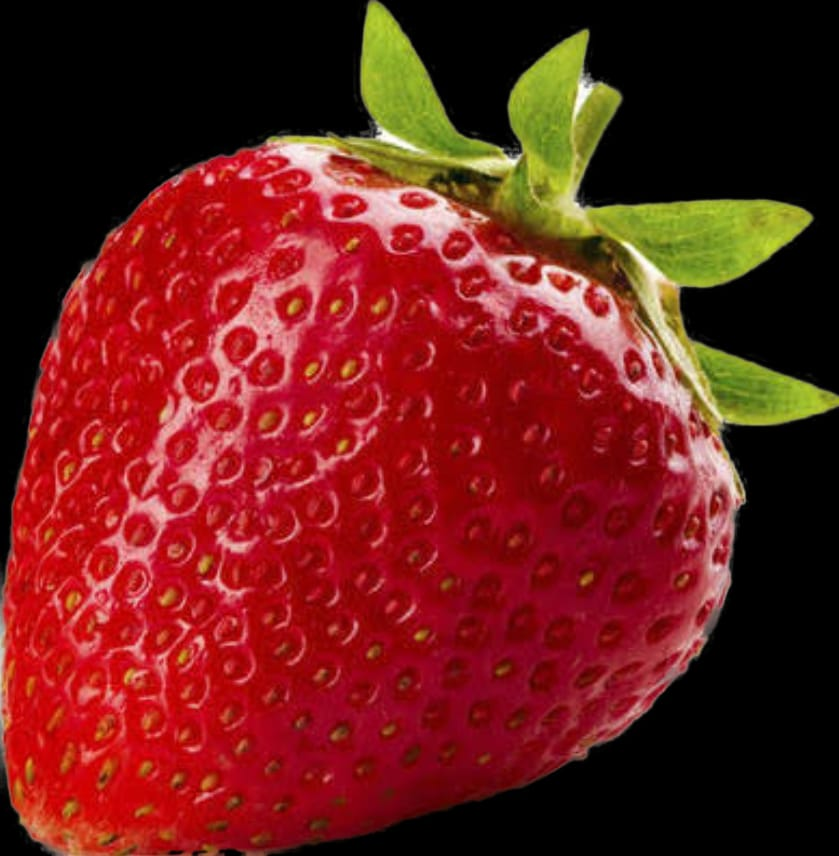

Strawberry Farms
Click on the map to know which all states have strawberry farms!

There are many states in India, where strawberries are found. One of the most famous is Maharastra. But this is not the only state where strawberry is available.
Scroll ahead to know more :)
Click on the map to know which all states have strawberry farms!

Harayana has two strawberry farms. One of them is Beniwal Strawberry Farm and the other is Strawberry farm.
Maharastra has many but the most popular ones are Laxmi Strawberry Farm and Bhilare Strawberry Farm and Strawberry Picking.
Karnataka has many starwberry farms as well. Some are KMC Farms, KV Strawberry Farm and Bren Farm
Kerala has one farm only.
Strawberries may be available through the year, but they should ideally be bought and stored during winters. It is the perfect season to cherish its fresh flavour. So one of the most important factors to look out for buying these berries is to find them during winters.
One of the best indicators of a stale strawberry is its smell. The freshest berries are the most fragrant. If you find its smell slightly mushy and unpleasant, do not buy them. Try buying strawberries from a local store than a supermarket as they may have fresher and juicier lot.
A fresh strawberry should be firm to touch, bright red in colour and should be free of moulds and bruises. Do not pick up green berries in a bid to ripen them at home, considering they barely have any flavour. Also, fresh berries will have stems, or caps fully attached to the fruit, bright green in colour, indicating they are fresh.
Rather than picking up large sized berries, pick the medium ones as they tend to have more flavour and juices as compared to the latter. Larger berries, in fact, may be hollow from inside and full of water, which can ruin the taste. Smaller berries may have a hard bottom packed with seeds.
1.Do not wash the strawberries after you have bought them, unless you want to eat them. Strawberries soak up the water, which may make the berry mushy and inedible. Therefore, wash them right before consumption or use.
2. If you are not planning to eat the strawberries immediately, you should ideally freeze them so that they don't spoil.
3. Even if you keep them in the fridge for a while to enjoy them slightly cold, make sure you wrap them in a paper towel in order to prevent dampness.
4. If you plan to eat them in an hour or two, make sure you don't pluck off their stems. So, even if you grab them after two hours, you will find them fresh and ready to be devoured.